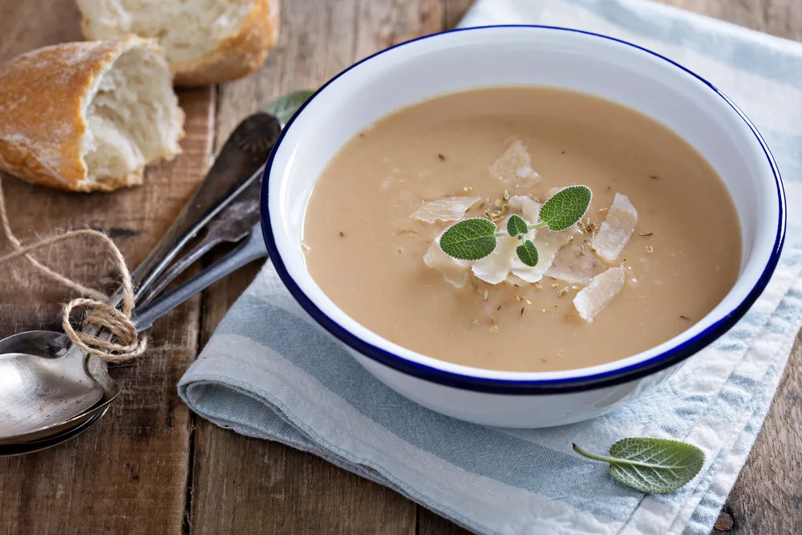

Roasted Garlic Soup with Parmesan Cheese

Recipe Sourced From "BON APPÉTIT" February 1999 issue
- 26 garlic cloves (unpeeled)
- 2 tablespoons olive oil
- 2 tablespoons (1/4 stick) butter
- 2 1/4 cups sliced onions
- 1 1/2 teaspoons chopped fresh thyme
- 18 garlic cloves, peeled
- 3 1/2 cups chicken stock or canned low-salt chicken broth
- 1/2 cup whipping cream
- 1/2 cup finely grated Parmesan cheese (about 2 ounces)
- 4 lemon wedges
- Preheat oven to 350°F. Place 26 garlic cloves in small glass baking dish. Add 2 tablespoons olive oil and sprinkle with salt and pepper; toss to coat. Cover baking dish tightly with foil and bake until garlic is golden brown and tender, about 45 minutes. Cool. Squeeze garlic between fingertips to release cloves. Transfer cloves to small bowl.
- Melt butter in heavy large saucepan over medium-high heat. Add onions and thyme and cook until onions are translucent, about 6 minutes. Add roasted garlic and 18 raw garlic cloves and cook 3 minutes. Add chicken stock; cover and simmer until garlic is very tender, about 20 minutes. Working in batches, purée soup in blender until smooth. Return soup to saucepan; add cream and bring to simmer. Season with salt and pepper. (Can be prepared 1 day ahead. Cover and refrigerate. Rewarm over medium heat, stirring occasionally.)
- Divide grated cheese among 4 bowls and ladle soup over. Squeeze juice of 1 lemon wedge into each bowl and serve.